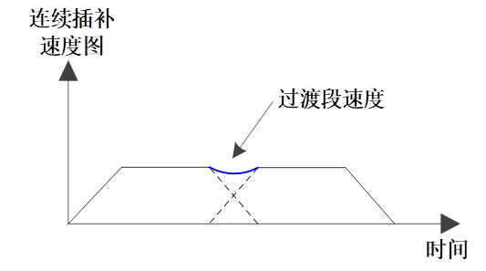

|
类型 |
机械手平滑过渡相关指令 |
|
描述 |
连续插补平滑的时间偏移指令。作用是为了提高运动指令之间过渡的合成速度，如下所示，以提高节拍效率。原理是当上一段运动指令开始减速时，下一段运动指令开始加速，设置的插补偏移时间越大，减速则越少或不减速。  |
|
语法 |
MOVER2_ZSMOFFSET(value) value：连续运动过渡的平滑时间偏移值；单位：ms 1）设置为-1，表示内部计算出最优值 |
|
适用控制器 |
4系列20170511以上固件支持 |
|
例程 |
BASE(6,7,8,9) '选择虚拟轴号 CONNREFRAME(1,0,0,1,2,3) '启动正解连接；SCARA机械手 WAIT LOADED '等待运动加载，此时会自动调整虚拟轴的位置。 ?"正解模式"
base(6,7,8,9) zsmooth = 100 ‘设置平滑过渡程度值100 MOVER2_PABS(-1,2201.2, 4.1,0,17.5) mover2_zsmoffset(-1) ‘内部通过计算最优值来进行平滑时间偏移；表示上一条MOVER2_PABS与下一条MOVER2_PABS进行插补时间偏移。 MOVER2_PABS(-1,1137.2,941,200,68.9) mover2_zsmoffset(0) ‘表示上一条MOVER2_PABS与下一条MOVER2_LABS不进行插补时间偏移。 MOVER2_LABS(-1,71.9,1876.3,-323.9,120.4) wait idle(0)
|
|
相关指令 |
|